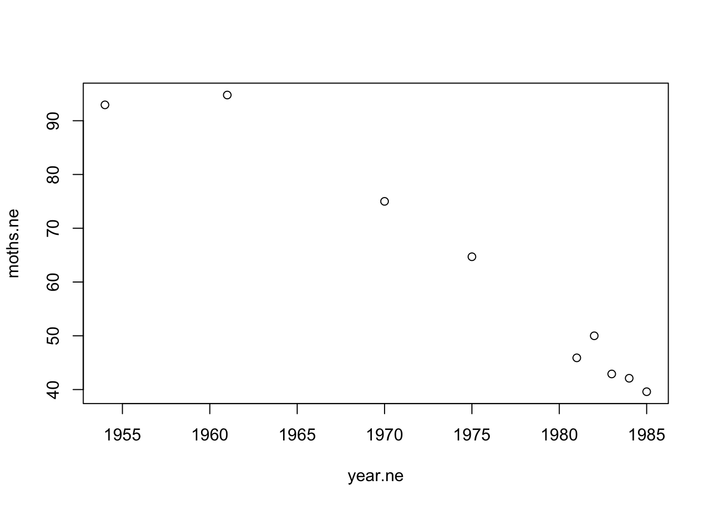

Chapter 10 Build your own dataframe part I: Vectors
10.1 Dataframes are a type of data structure
For small datasets its often useful to build your own dataframes. Dataframes are objects in R; in particular they are a type of data structure. “Data structure” is just a fancy way of saying “holding or organizing data.”
We’ll work with the SeaIce data again.
library(Stat2Data)
data("SeaIce")If we’re curious about what kind of data is in an object we can use the class() command to see how is is classified.. Generally the first thing R spits out is the most important.
class(SeaIce)## [1] "data.frame"We see that SeaIce is adata.frame`.
A related command is is()
is(SeaIce)## [1] "data.frame" "list" "oldClass" "vector"This command is more verbose and tells of several things, the most relevant of which is that SeaIce is a dataframe.
The SeaIce dataframe has several columns. We can pull up their names using the names() command.
names(SeaIce)## [1] "Year" "Extent" "Area" "t"There are times when we may want to examine just a single column. We can isolate a single column using a species notation which uses a dollar sign. To get the Extent column we do this
SeaIce$Extent## [1] 7.22 7.86 7.25 7.45 7.54 7.11 6.93 7.55 7.51 7.53 7.08 6.27 6.59 7.59 6.54
## [16] 7.24 6.18 7.91 6.78 6.62 6.29 6.36 6.78 5.98 6.18 6.08 5.59 5.95 4.32 4.73
## [31] 5.39 4.93 4.63 3.63 5.35 5.29 4.6810.2 Dataframes are made from vectors
Running this we get just a stream of numbers. In R, such a stream of numbers is called a vector. Like dataframes, vectors are a type of data structure. We can check this with is()
is(SeaIce$Extent)## [1] "numeric" "vector"The first result is numeric, which indicates that there are numbers in this vector; the second result is vector.
All columns in a dataframe are are vectors:
is(SeaIce$Year)## [1] "integer" "double" "numeric"
## [4] "vector" "data.frameRowLabels"is(SeaIce$Area)## [1] "numeric" "vector"10.3 Make your own vectors
We can make our own vectors using the c() command. (c() does MANY things in R, so we’ll see it a lot).
Here is some more recent data on the Canda Lynx from 1984 to 2002 (Poole 2003, Table 3):
c(13445, 8625, 6853, 6953, 6574,
8265, 9977, 7579, 11542, 7180,
4713, 4907, 2819, 5171, 6873,
6148, 8573, 9361, 11226)## [1] 13445 8625 6853 6953 6574 8265 9977 7579 11542 7180 4713 4907
## [13] 2819 5171 6873 6148 8573 9361 11226We can save this to an R object using a very species function in R called the assigment operator
lynx.ca <- c(13445, 8625, 6853, 6953, 6574,
8265, 9977, 7579, 11542, 7180,
4713, 4907, 2819, 5171, 6873,
6148, 8573, 9361, 11226)We’ve now made a brand new object in R called lynx.ca. We can see what it is by just typing its name in the console…
lynx.ca## [1] 13445 8625 6853 6953 6574 8265 9977 7579 11542 7180 4713 4907
## [13] 2819 5171 6873 6148 8573 9361 11226…and confirming what it is with is() and class()
is(lynx.ca)## [1] "numeric" "vector"class(lynx.ca)## [1] "numeric"The data are from 1984 to 2002. We can make a year vector like this
year <- c(1984, 1985, 1986, 1987,
1988, 1989, 1990, 1991, 1992,
1993, 1994, 1995, 1996, 1997,
1998, 1999, 2000, 2001, 2002)Its rather tedious to do that, so R has a trick. If we want a sequence of numbers we can use the seq() command, which has the arguments from =... and to = ....
year <- seq(from = 1984, to = 2002)10.4 Checking the length of vectors
Typing in data directly into R is errorprone and whenever we do it we should check our work carefully. A first check should be that we entered in all the numbers; we can do this by getting R to tell us the length of the vector. Can you guess what the command is called?
length(lynx.ca)## [1] 19Let’s check that our year vector is the same length
length(year)## [1] 1910.5 Another example
Another famous example
Howlett and Majerus. 1987. The understanding of industrial melanism in the peppered moth (Biston betularia) .(Lepidoptera: Geometridae). 30: 31-44.
Table 2
year.ne <- c(1954, 1961, 1970, 1975, 1981, 1982, 1983, 1984, 1985)
moths.ne <- c(92.95, 94.78, 75, 64.7, 45.9, 50, 42.9, 42.1, 39.6)(Raw data is slightly more complicated, but this works)
length(year.ne)## [1] 9length(moths.ne)## [1] 9moths <- data.frame(year.ne,
moths.ne)plot(moths.ne ~ year.ne, data = moths)
Not how R doesn’t need extra space for the years where there are no data
10.6 Try it yourself
The original lynx data that comes with R spans the year 1821–1934. Make a sequence of numbers called year.lynx using the seq() command.
1957:1964## [1] 1957 1958 1959 1960 1961 1962 1963 1964There was a hypothesis that sunspot number and/or size impact lynx populations. R has a dataset called sunspots that runs from 1749 to 1983. Make a vector called year year.sunspot using the seq() command.
1749:1983## [1] 1749 1750 1751 1752 1753 1754 1755 1756 1757 1758 1759 1760 1761 1762 1763
## [16] 1764 1765 1766 1767 1768 1769 1770 1771 1772 1773 1774 1775 1776 1777 1778
## [31] 1779 1780 1781 1782 1783 1784 1785 1786 1787 1788 1789 1790 1791 1792 1793
## [46] 1794 1795 1796 1797 1798 1799 1800 1801 1802 1803 1804 1805 1806 1807 1808
## [61] 1809 1810 1811 1812 1813 1814 1815 1816 1817 1818 1819 1820 1821 1822 1823
## [76] 1824 1825 1826 1827 1828 1829 1830 1831 1832 1833 1834 1835 1836 1837 1838
## [91] 1839 1840 1841 1842 1843 1844 1845 1846 1847 1848 1849 1850 1851 1852 1853
## [106] 1854 1855 1856 1857 1858 1859 1860 1861 1862 1863 1864 1865 1866 1867 1868
## [121] 1869 1870 1871 1872 1873 1874 1875 1876 1877 1878 1879 1880 1881 1882 1883
## [136] 1884 1885 1886 1887 1888 1889 1890 1891 1892 1893 1894 1895 1896 1897 1898
## [151] 1899 1900 1901 1902 1903 1904 1905 1906 1907 1908 1909 1910 1911 1912 1913
## [166] 1914 1915 1916 1917 1918 1919 1920 1921 1922 1923 1924 1925 1926 1927 1928
## [181] 1929 1930 1931 1932 1933 1934 1935 1936 1937 1938 1939 1940 1941 1942 1943
## [196] 1944 1945 1946 1947 1948 1949 1950 1951 1952 1953 1954 1955 1956 1957 1958
## [211] 1959 1960 1961 1962 1963 1964 1965 1966 1967 1968 1969 1970 1971 1972 1973
## [226] 1974 1975 1976 1977 1978 1979 1980 1981 1982 198310.7 A complicate dataframe to make
10.8 Build the dataframe
This code makes all of the columns and makes a dataframe
aa <-c('A','C','D','E','F','G','H','I','K','L','M','N','P','Q','R','S','T','V','W','Y')
MW.da <-c(89,121,133,146,165,75,155,131,146,131,149,132,115,147,174,105,119,117,204,181)
volume <-c(67,86,91,109,135,48,118,124,135,124,124,96,90,
114,148,73,93,105,163,141)
bulkiness <-c(11.5,13.46,11.68,13.57,19.8,3.4,13.69,21.4,
15.71,21.4,16.25,12.28,17.43,
14.45,14.28,9.47,15.77,21.57,21.67,18.03)
polarity <-c(0,1.48,49.7,49.9,0.35,0,51.6,0.13,49.5,0.13,
1.43,3.38,1.58,3.53,52,1.67,1.66,0.13,2.1,1.61)
isoelectric.pt <-c(6,5.07,2.77,3.22,5.48,5.97,7.59,6.02,9.74,5.98,
5.74,5.41,6.3,5.65,10.76,5.68,6.16,5.96,5.89,5.66)
hydrophobe.34 <-c(1.8,2.5,-3.5,-3.5,2.8,-0.4,-3.2,4.5,-3.9,3.8,1.9,
-3.5,-1.6,-3.5,-4.5,-0.8,-0.7,4.2,-0.9,-1.3)
hydrophobe.35 <-c(1.6,2,-9.2,-8.2,3.7,1,-3,3.1,-8.8,2.8,3.4,-4.8,
-0.2,-4.1,-12.3,0.6,1.2,2.6,1.9,-0.7)
saaH2O <-c(113,140,151,183,218,85,194,182,211,180,204,158,
143,189,241,122,146,160,259,229)
faal.fold <-c(0.74,0.91,0.62,0.62,0.88,0.72,0.78,0.88,0.52,
0.85,0.85,0.63,0.64,0.62,0.64,0.66,0.7,0.86,0.85,0.76)
polar.req <-c(7,4.8,13,12.5,5,7.9,8.4,4.9,10.1,4.9,5.3,10,
6.6,8.6,9.1,7.5,6.6,5.6,5.2,5.4)
freq <-c(7.8,1.1,5.19,6.72,4.39,6.77,2.03,6.95,6.32,
10.15,2.28,4.37,4.26,3.45,5.23,6.46,5.12,7.01,1.09,3.3)
charge<-c('un','un','neg','neg','un','un','pos','un','pos',
'un','un','un','un','un','pos','un','un','un','un','un')
hydropathy<-c('hydrophobic','hydrophobic','hydrophilic','hydrophilic','hydrophobic','neutral','neutral','hydrophobic','hydrophilic','hydrophobic','hydrophobic','hydrophilic','neutral','hydrophilic','hydrophilic','neutral','neutral',
'hydrophobic','hydrophobic','neutral')
volume.cat<-c('verysmall','small','small','medium',
'verylarge','verysmall','medium','large','large',
'large','large','small','small','medium','large','verysmall','small','medium','verylarge','verylarge')
polarity.cat<-c('nonpolar','nonpolar','polar','polar',
'nonpolar','nonpolar','polar','nonpolar',
'polar','nonpolar','nonpolar','polar','nonpolar','polar',
'polar','polar','polar','nonpolar','nonpolar','polar')
chemical<-c('aliphatic','sulfur','acidic','acidic','aromatic',
'aliphatic','basic','aliphatic','basic','aliphatic','sulfur',
'amide','aliphatic','amide','basic','hydroxyl','hydroxyl',
'aliphatic','aromatic','aromatic')
aa_dat <- data.frame(aa,MW.da,volume,bulkiness,
polarity,isoelectric.pt,hydrophobe.34,hydrophobe.35,
saaH2O,faal.fold, polar.req,freq,charge,hydropathy,volume.cat,polarity.cat,chemical)Try plotting one numeric variable against another.
10.8.1 Factors
The amino acid data contains both numeric data and vectors of words that represent categories or groups of similar amino acids. When the dataframe first is created R doesn’t do anything with it. For example, if we look at a numeric variable, we get this summary information
summary(aa_dat$MW.da)## Min. 1st Qu. Median Mean 3rd Qu. Max.
## 75.0 118.5 132.5 136.8 150.5 204.0If we do the same summary command on a column of text we get this
summary(aa_dat$hydropathy)## Length Class Mode
## 20 character characterWe can help R make sense of this columns usin the command factor().
aa_dat$hydropathy <- factor(aa_dat$hydropathy)Note that on the right is the command
factor(aa_dat$hydropathy)and on the left we are assigning the output of this function back onto the original column, thus telling R that the words in this column represent group or categories. (The term “factor” comes from statistics and isn’t very helpful about what’s going on.)
summary(aa_dat$hydropathy)## hydrophilic hydrophobic neutral
## 6 8 6Note that if I do this
aa_dat <- factor(aa_dat$hydropathy)I overwrite the entire aa_dat dataframe object with the data of just the aa_dat$hydropathy column.
10.9 References
Poole, Kim G. 2003. A review of the Canada Lynx, Lynx canadensis ,in Canada. Canadian [Field-Naturalist 117: 360-376.[(https://www.canadianfieldnaturalist.ca/index.php/cfn/article/view/738)] DOI: https://doi.org/10.22621/cfn.v117i3.738